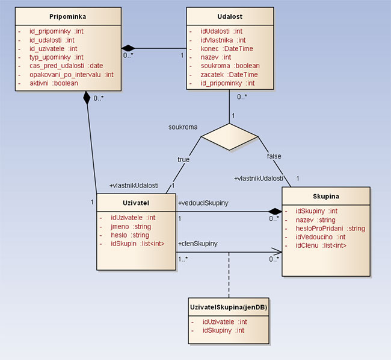

1. Obrázek s modelem (E-R diagram)
musí obsahovat minimálně 4 entity, lze použít model z vlastních předchozích semestrálních prací apod. Doporučena jsou originální zadání (nikoliv různé knihovny, databáze CD/DVD, autobazary, apod.)
2. Slovní popis dodatečných integritních omezení
- trivialni omezeni: tabulka Udalost - konec události musí být větší než zacatek
- natriviální omezení: tabulky Pripominka/Udalost - cas_pred_udalosti nemůže být větší než je začátek události
3. Návrh API rozhraní „business logiky“ pro dva procesy
4. Návrh pěti slovně formulovaných dotazů nad schématem
5. Skript, který vytvoří databázové schéma odpovídající E-R diagramu
6. Skript, který vytvoří v databázovém schématu dodatečná integritní omezení
7. Skript, který naplní tabulky testovacími daty
8. Skript (včetně výstupu spool), který provede postupně všechny navržené dotazy (viz výše)
9. Skript, který se pokusí porušit postupně všechna dodatečná integritní omezení + výstup spool z provádění tohoto skriptu (budou vidět chyby při porušení I.O.)
10. Skript pro vytvoření balíku (package) a procedur „business logiky“ (viz výše)
11. Testovací skript (včetně výstupu spool obdrženého po spuštění) pro obě procedury, včetně souvisejících dotazů, které ověří, že každá procedura provedla to co měla
12. Skript, který doplní do zvolené tabulky schématu sloupec, který bude obsahovat odvozené hodnoty (průměrný plat zaměstnance v rámci oddělní apod.) – tyto hodnoty budou automaticky aktualizovány pomocí triggerů
13. Skript, který vytvoří úložiště ještě jednou v „objektové“ podobě
14. Skript, který provede navržených pět dotazů znovu, tentokrát nad objektovými tabulkami
15. Navrhněte slovně fakta a dimenze pro datový sklad vycházející z vaší databáze. P